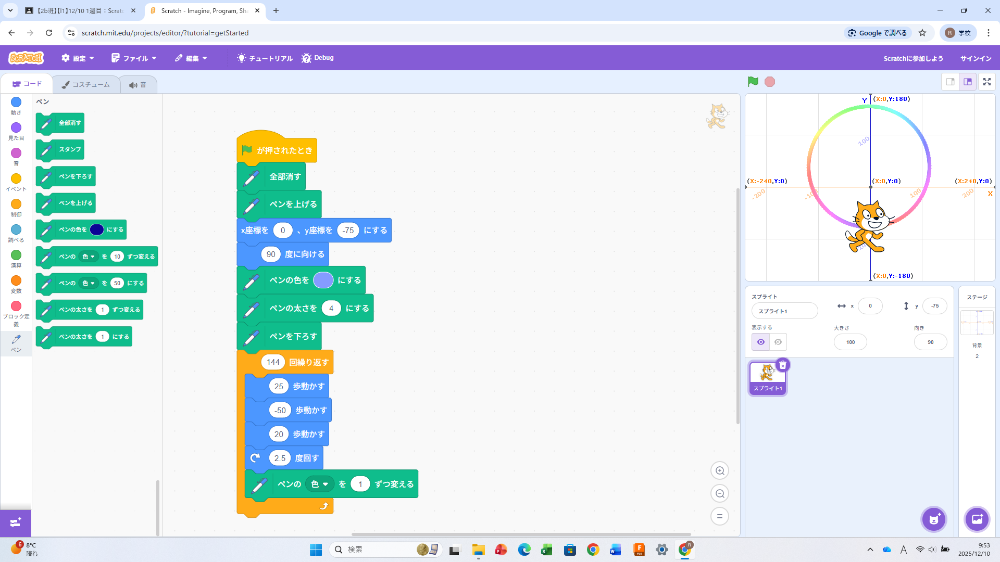
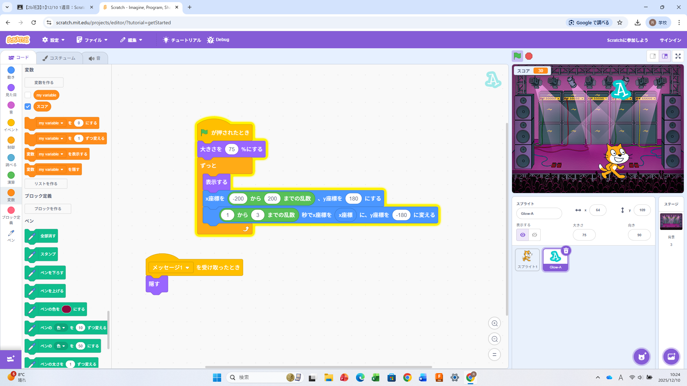

1週目のレポート ： 公大高専１年実習I-1
2b班23番 NagaSho
第1週目
1-1 サイエンスアート

1.内容
このパートでは、拡張機能であるペンとブロックを使って、画面上の猫を動かし、様々な形を形成する方法を学んだ。
また、色の変化具合や初めの色を設定し、アートの色を変更する方法も学んだ。
2.感想
最初、資料通りにアートを作成した際に、移動の歩数とペンの太さを変えると周りの線が細くなり、
もっときれいな線に近づけるのではないかと考え、変更すると変わったので面白いと感じた。
1-2 ゲーム

1.内容
このパートでは、新しいスプライトの生成方法や、それをランダムに落とすための乱数、スコアを表示するための変数の使い方について学んだ。
また、キーボード上のあるキーを押すと猫を動かせるということも学んだ。
2.感想
はずれのスプライトに触れたら減点など、もう少し、複雑にすることができると感じた。
さらに、普段しているゲームがこれよりもはるかに複雑なプログラムによって作られていると思うと、すごく興味深いと感じた。
1-3 ホームページ作成
私のホームページ
1.内容
GitHubというサイトを使うことでオリジナルのホームページを作ることができると学んだ。
また、それを自分で自由に編集することができ、三角かっことbrで改行することができると学んだ。
2.感想
普段、インターネットを使って検索等を行ったときに出てくるホームページはどのようにして作られているのか気になった。
また、自分のスマホで自分だけのホームページが見られるのはすごいと感じた。
各ページへのリンク
1週目のレポート
2週目のレポート
3週目のレポート
私のホームページ